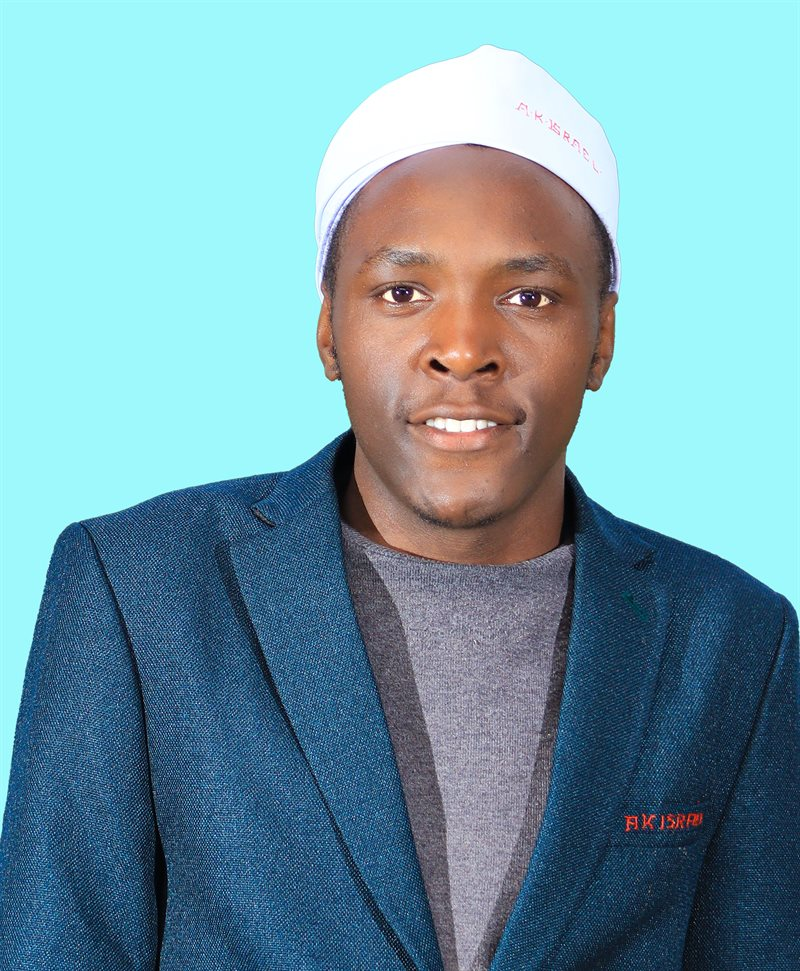

01
Website content writing
Clear, customer-friendly page copy, service descriptions and product descriptions that explain what you offer and why it matters.

GIDION KIONGOTravel Consultant at HK Adventure and certified Independent Travel Manager, with hands-on experience in travel reservations, itinerary planning, visa processing and hotel operations. I bring together sustainable tourism knowledge, research, creative storytelling and digital content skills to help communicate ideas, promote destinations and support business growth.
I am a Travel Consultant and Sustainable Tourism & Hospitality Management graduate from Dedan Kimathi University of Technology. I currently handle clients' complete travel needs at HK Adventure, from flights, accommodation and car hire to full trip arrangements, and I have hands-on experience in passport and visa processing and hotel operations. I am committed to exceptional customer experiences and sustainable tourism practices.
I enjoy using clear communication, creative storytelling and digital tools to help businesses present their services, connect with audiences and promote destinations. My developing skill set includes SEO-oriented writing, website content support, tourism research, graphic design and AI-assisted creative concepts.
To contribute to tourism, hospitality and digital projects by combining my academic foundation with research, content creation and technology skills—while continuing to grow in travel management, digital marketing and sustainable destination development.
Practical support for tourism, hospitality and small businesses that want to present themselves clearly online.
Clear, customer-friendly page copy, service descriptions and product descriptions that explain what you offer and why it matters.
Content shaped around relevant search terms, clear headings and useful information so customers can find your business online.
Captions, post ideas and simple visuals made with Canva and Photoshop to keep your pages active and on-brand.
Storytelling that highlights Kenya's attractions, wildlife and lesser-known destinations, with a focus on responsible travel.
Simple, responsive websites built from scratch for small businesses, from layout to written content.
Flight, accommodation and car hire bookings, detailed itineraries, and passport and visa application support, drawing on my work as a travel consultant.
Tell me what you need and I will get back to you.
From hotel and tour operations attachments to full-time travel consulting.
A selection of work areas that demonstrate my interests and developing capabilities.
Support the business's online presentation through product descriptions and website content for timber, doors and furniture. Focus on clear product information, relevant search terms and customer-friendly presentation.
Skills: Product copywriting, SEO-oriented writing, website content support.
Visit website ↗Work as a Travel Consultant, handling client bookings and itineraries, and develop tourism content ideas highlighting Kenya's attractions, wildlife and lesser-known destinations, with an emphasis on engaging storytelling and responsible travel promotion.
Skills: Destination storytelling, content planning, branding concepts.
Visit website ↗Serve as an executive marketer for HomeSeek, a house-rental platform listing bedsitters, apartments and rooms across Nairobi. Promote listings, connect tenants with suitable homes and help grow the platform's reach.
Skills: Digital marketing, client engagement, property promotion.
Visit website ↗Designed and developed the Giant Interior website from scratch, presenting the business's interior design services through a clean, modern and responsive layout.
Skills: Web development, UI design, front-end coding.
View code on GitHub ↗Academic research examining how insecurity-related concerns may affect perceptions of safety and tourism-sector performance. The topic highlights crisis preparedness, stakeholder collaboration, governance and destination resilience.
Skills: Research writing, tourism analysis, report preparation.
Explore Canva, Adobe Photoshop and AI-assisted tools to develop visual concepts and promotional content for tourism and business communication.
Skills: Graphic design, visual communication, creative ideation.
What I have delivered so far, and where it can be checked.
Employed as a Travel Consultant at HK Adventure soon after graduating, handling clients' flights, accommodation, car hire and full trip arrangements.
Evidence: current role since July 2026; reference available from the HK Adventure manager.
Supported clients with passport and visa applications, bookings and itineraries during a six-month travel services internship.
Evidence: internship at ASAMWAX Enterprise, January – June 2026.
Handled client travel inquiries, prepared itineraries and booked accommodation and transport during a three-month tour operations attachment.
Evidence: recommendation letter from Travelicious Tours & Travel, April 2025.
Completed a full departmental rotation (front office, housekeeping, food & beverage and kitchen) in a working hotel.
Evidence: industrial attachment at Westwood Hotel, Nyeri, 2024.
Designed and built the Giant Interior website from scratch.
Evidence: source code on GitHub.
Wrote product descriptions and website content for timber, doors and furniture on the Markies Timbers website.
Evidence: markiestimbers.com.
Completed an academic research study on political instability and tourism in Nyeri Town.
Evidence: undergraduate research project, Dedan Kimathi University of Technology.
Developed a natural kitchen soap as a sustainability innovation project.
Evidence: fourth-year innovation project, Dedan Kimathi University of Technology.
Dedan Kimathi University of Technology (DeKUT) · 2022 – 2026 (graduated June 2026)
Institute of Tourism and Hospitality Management
Lelu Secondary School · 2017 – 2021
Sustainable tourism · Hospitality operations · Travel management · Destination marketing · Tourism research · AI-powered storytelling · Digital marketing · Website content and SEO
“He demonstrated professionalism, enthusiasm, and a genuine interest in the tourism industry… He also proved to be dependable and eager to learn, often going above and beyond what was expected. It was evident that he took the role seriously and treated every task with commitment and attention to detail.”
— Ondere Francis, Supervisor, Travelicious Tours and Travel
I bring together formal training in tourism and hospitality with a practical interest in digital communication and innovation. I am adaptable, curious and committed to learning. My goal is to build deeper capability in travel technology, reservations, SEO, content production, data analysis and website development, and to help organizations communicate their value and create responsible visitor experiences.
Open to job opportunities and freelance projects in tourism, hospitality, content creation, digital marketing, research and website creation.